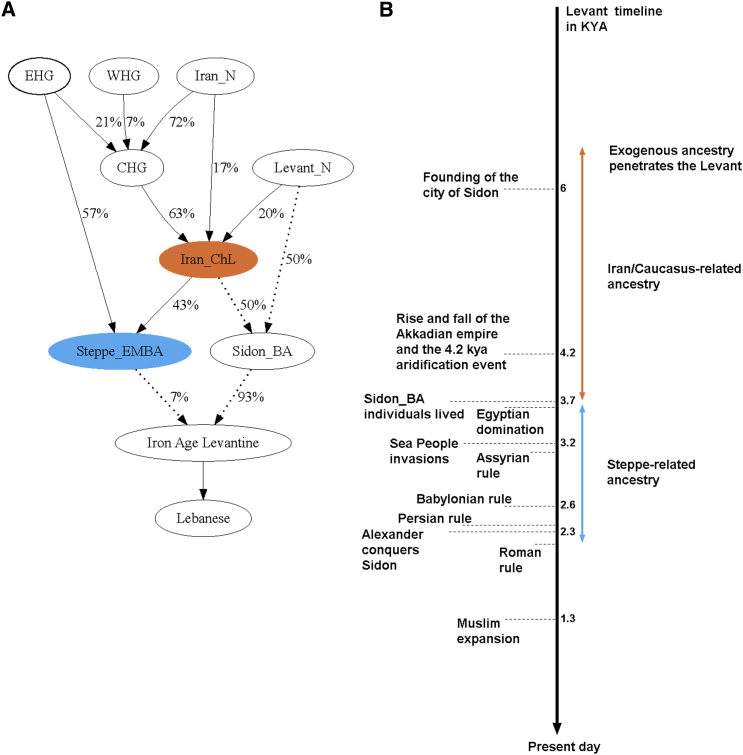
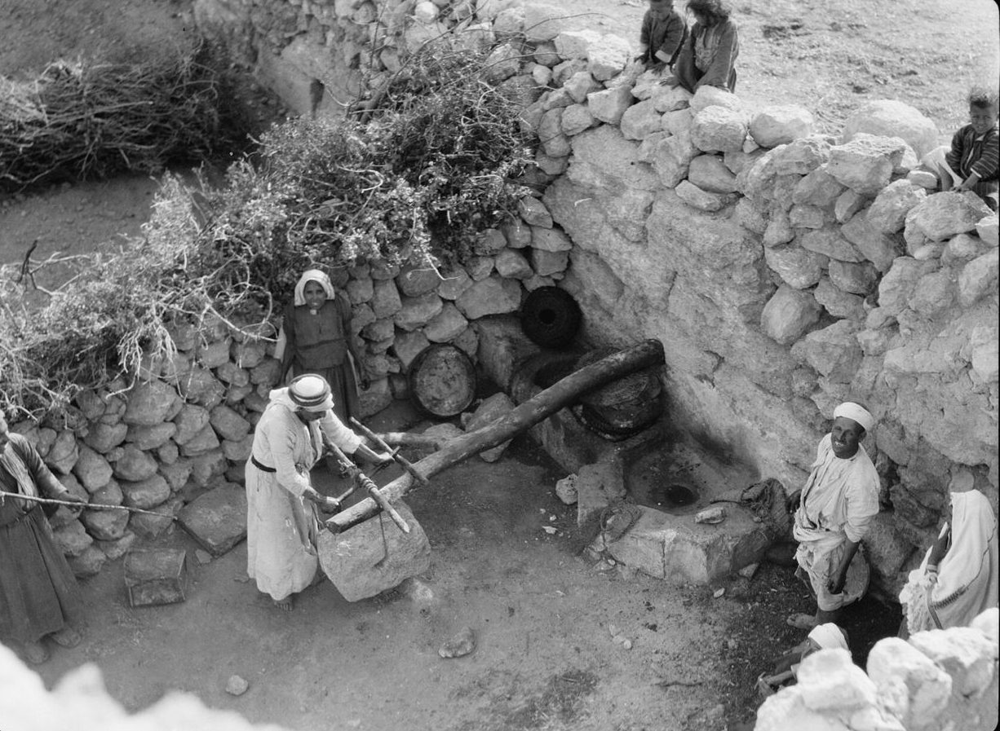
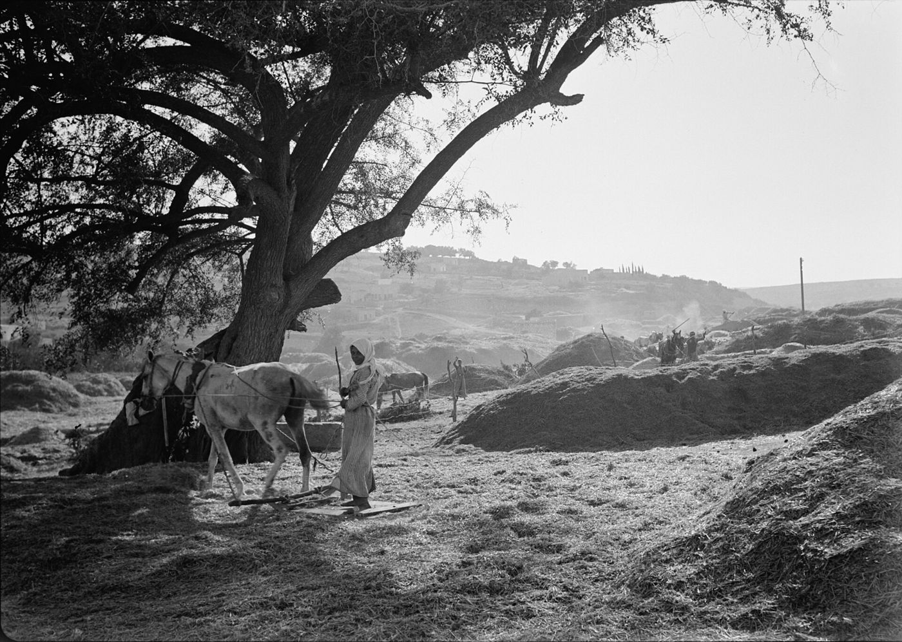

This page is a translation of the German original (as of 15 November 2026). Links lead to German pages unless marked otherwise.
“Arab” is a word for a language and culture, not for an ancestry. The Palestinians speak Arabic and also see themselves as part of the Arab world – but by far the greater part of their ancestors already lived in the Levant in the Bronze Age. Ancient DNA shows: the population of the land was never replaced – neither by the Philistines, nor by the Romans, nor by the Arab conquest. The conquest brought language and religion and a smaller, measurable influx of people. The land was never “empty” – its people were always there.
“A land without a people”? Genetics says: the people were always there
The phrase “A land without a people for a people without a land” was one of Zionism’s most effective slogans. Ancient DNA refutes it from an unexpected side: it shows uninterrupted settlement by the same population since the Bronze Age – through the rule of Egyptians, Assyrians, Babylonians, Persians, Greeks, Romans, Byzantines, Arabs, Crusaders, Mamluks and Ottomans. The rulers changed, the people stayed. A land whose inhabitants demonstrably have lived there for 4,000 years was never empty – and the Palestinians who were expelled in 1948 were the descendants of these people.
- 1“A land without a people” – coined by Christian Zionists in the 19th century, popularised by Israel Zangwill in 1901 (“The Return to Palestine”, New Liberal Review, December 1901, p. 615; on the origin of the phrase Diana Muir, Middle East Quarterly 15/2, 2008).
Check: refuted → Evidence 1, 2 and 5 on the right. - 2“We made the desert bloom” – the land is said to have been desolate before Zionist immigration. Israel’s founding declaration of 14 May 1948 says of the pioneers: “they made deserts bloom”.
Check: misleading It is true that Zionist settlements brought individual tracts under cultivation; but the land as a whole was farmed and exported produce → Evidence 3 and 5 on the right. - 3“The Arabs only immigrated with Zionism” – as Joan Peters claimed in 1984 (From Time Immemorial), drawn by work and prosperity.
Check: refuted Yehoshua Porath showed the book’s one-sided and tendentious use of sources (“Mrs. Peters's Palestine”, New York Review of Books, 16 January 1986) → Evidence 1 and 2 on the right. - 4“Palestinians are Arab conquerors from the 7th century” – strangers who could just as well live elsewhere (a widespread formula, hasbara check no. 8; no single originator is named here).
Check: refuted → Evidence 1 and 4 on the right and “Arab”: a word for language.
- 1Genetics: The population was never replaced. Even the Philistines, who gave the land its name, were absorbed into the local population within two centuries; the Arab conquest brought language and religion and an admixture, but no new people (→ below).
- 2Figures: In Byzantine times around 1 to 1.5 million people lived in the land; in 1914 around 797,000 (Justin McCarthy), about 59,000 of them Jews; the British census of 1922 counted 757,182 inhabitants (→ Eras).
- 3Agriculture: Terraced slopes, olive groves, wheat, soap from Nablus, oranges from Jaffa – in 1938 Palestine exported around 15 million cases of citrus fruit, most of it from Arab-owned groves.
- 4Names, language, customs: The villages bore the ancient place names, the Arabic of the peasants preserves Aramaic words, their shrines stand on the same heights (→ three further witnesses).
- 5Zionists themselves knew it: After his journey, Ahad Ha'am wrote in 1891: “We abroad are used to believing that the Land of Israel is today almost completely desolate, a desert without seed … But in truth it is not so. Throughout the whole country it is hard to find arable land that is not already cultivated.” (translated from German; Ahad Ha'am, “Truth from the Land of Israel”, 1891; in English in Alan Dowty, Israel Studies 5/2, 2000)
Why this matters: The narrative of the empty land was never just a mistake. It made the people who lived there invisible – and what is invisible cannot be expelled, so the logic goes. Whoever says “land without a people” does not have to explain the Nakba. Genetics gives these people back their history: they were not passers-through, not 20th-century newcomers and not “Arabs who could just as well live elsewhere”, but the population of the land.
More on this in the Hasbara check: “A land without a people” and seven other founding myths (claims 1, 2, 7, 8 and 28) · The Nakba 1948 (English) · The Jews in the land. And explicitly: this finding is not an argument against Jewish roots in the land – both peoples share the same ancient ancestors (→ below).
“Arab”: a word for language, not for ancestry
Before the Arab conquest of 634–640, the people of Palestine spoke Aramaic and Greek and were predominantly Christians, Jews and Samaritans. Over the following centuries Arabic became the everyday language, and a large part of the population gradually converted to Islam. Archaeologically there is continuity of settlement: the villages continued to be inhabited, not resettled (Gideon Avni, The Byzantine–Islamic Transition in Palestine, Oxford 2014). The Christian communities, too, adopted Arabic without changing their religion. So “Arab” above all came to mean whoever spoke Arabic.
The Palestinian National Charter of 1968 speaks of the “Arab Palestinian people”, who are “an integral part of the Arab nation” (Art. 1), and defines Palestinians as “those Arab nationals who, until 1947, normally resided in Palestine” (Art. 5; full text). Being Arab and Palestinian is no contradiction: the one describes language and culture, the other a people with a homeland. The word only becomes a problem when it is used to claim that the Palestinians are strangers in their own land.
How the label was usedFrom the “non-Jewish population” to “Arabs who could live elsewhere”
Ben-Gurion himself wrote in his essay “On the Origin of the Fellahin” (Luach Achiezer, New York 1917, pp. 118–127) that the Palestinian peasants largely descended from the ancient Jewish rural population; “there is no doubt that much Jewish blood flows in their veins” (quoted in English from Judea Pearl, “Early Zionists and Arabs”, Middle East Quarterly 15/4, 2008, footnote; reprinted in Ben-Gurion’s collection Anachnu u-Shchenenu [“We and Our Neighbours”], Tel Aviv 1931, pp. 13–25; the Hebrew original could not be consulted). He was pursuing a political aim at the time – but the thesis contradicts the later image of the “immigrant Arabs”.
Balfour Declaration: The majority of the population – around nine in ten inhabitants – does not appear by name, but only as “existing non-Jewish communities in Palestine”, whose “civil and religious rights” are to be safeguarded; there is no mention of political rights (full text).
Golda Meir, Prime Minister, in the Sunday Times of 15 June 1969: “There were no such thing as Palestinians.” (quoted after the widely circulated rendering; the original newspaper page could not be consulted). → Claim no. 2 on the Hasbara page
Joan Peters, From Time Immemorial: the Arabs of Palestine had largely immigrated only with Zionism. Specialist historians such as Yehoshua Porath and Norman Finkelstein showed that the book’s figures had been manipulated. → Claim no. 28
The pattern: whoever calls the Palestinians only “Arabs” implies that they belong in “the Arab countries” and not in their own. Genetics refutes this insinuation – with findings documented below study by study.
How to read the diagrams
- 1Ancient DNA (aDNA): genetic material from bones, usually from the petrous bone of the skull. It allows a direct comparison between who lived 4,000 years ago and who lives today.
- 2Genome: a person’s entire genetic material. Everyone inherits half from their mother and half from their father – after ten generations it comes from more than a thousand ancestors.
- 3Source population: a very ancient population that serves as a reference point – e.g. the first farmers of the Levant around 10,000 years ago (“Levant_N”) or of the Zagros Mountains in Iran (“Iran_N”). The colours in the diagrams are such source populations, not present-day peoples.
- 4Admixture: the share of an ancestry that was added later. An admixture of 7 % means: on average about 7 % of the genetic material comes from this source.
- 5qpAdm: a statistical method that tests whether a group can be described as a mixture of certain sources, and gives the shares with a margin of error (e.g. 93 % ± 1.6).
- 6ADMIXTURE bars: each person is one vertical line, the colours are statistically identified components. A component is a pattern, not proof of origin.
- 7Y-chromosome haplogroup: a family of paternal lines passed from father to son almost unchanged. It shows only a single strand of ancestry out of thousands.
- 8Proxy: where a source is missing, researchers use a close stand-in – “Mota”, for example, is a 4,500-year-old man from Ethiopia who stands for “East Africa”. Percentages are model values, not family-tree shares.
Who the “Canaanites” were genetically
The largest study to date on the Bronze Age of the southern Levant (Agranat-Tamir et al., Cell 2020, full text) analysed 73 genomes from Megiddo, Hazor, Yehud, Abel Beth Maacah and Baq'ah. Result: the people called “Canaanites” in the sources resembled one another more than anyone else – and were themselves already a mixture, 48 to 57 % from the first farmers of the Levant and the rest from migrants from the Zagros and the Caucasus. For present-day Arabic-speaking and Jewish groups the study states: they are “compatible with having more than 50% Middle Eastern-related ancestry”. That is a lower bound. In its text the study gives no values for Palestinians; in its Figure 5, however, they appear as one of 17 present-day groups: depending on the method, around 80–89 % falls there on a combined source of Bronze Age Megiddo and Chalcolithic Iran, about 8–12 % on East Africa (proxy: Somali) and about 3–8 % on Europe. These values are read off the figure; the exact numbers are in Table S4 of the study, which could not be consulted. Even this is not a pure “Canaanite” figure, because the figure combines Megiddo and Iran into one source.
Continuity is most directly documented for Lebanon. There, 3,700-year-old genomes from Sidon could be compared with present-day Lebanese:
Model with 3.700-year-old genomes
Own chart based on Haber et al. 2017, American Journal of Human Genetics 101/2, Fig. 3C. The study concerns Lebanese; there is no comparable figure for Palestinians.

A later study from Beirut (Haber et al. 2020) additionally shows smaller influxes in the Iron Age (12–37 % from Anatolia/south-eastern Europe), in the Hellenistic period (6–12 % from South and Central Asia) and in the Ottoman period (Caucasus) – the Romans left hardly a trace. No influx replaced the population.
What is documented about the Palestinians themselves
There is no published figure “x % of Palestinians descend from the Canaanites”. None of the major studies sampled Palestinians anew; they are included as a comparison group from older datasets. Anyone who cites such a percentage is misquoting. What is documented is the following.
Whole genomeThe foundation is Levantine–West Asian
Negev
Own chart based on Srigyan et al. 2022, Communications Biology 5:554, Table 2 (qpAdm model; error per share about ±1–4 percentage points). How to read it: The colours are ancient source populations, not peoples. The model does not measure “Canaanites” or “Arabs” – both themselves consist of these source populations. But it clearly shows: the foundation of all groups is West Asian; the African share of the Palestinians is around 6–7 %.

What was addedA measurable influx from Arabia and Africa
The studies show among Palestinians – as among Jordanians and Syrians – an influx from the Arabian Peninsula and from Africa that hardly occurs among Lebanese Christians and Druze:
- 1Haber et al. 2013: A component that predominates in Arabia and East Africa accounts for around 25 % among Palestinians, Jordanians and Syrians, and 4–20 % among other Levantines. The genetic structure of the Levant today follows religion: with Islam, new marriage circles opened up.
- 2Srigyan et al. 2022 and Almarri et al. 2021: East African share among Palestinians around 6–7 %, among Druze close to zero; the African influx falls mostly within the last 2,000, usually 500 to 1,000 years (Almarri 2021).
- 3Direct evidence of Arab migrants: Two individuals from the Umayyad period (665–768) in southern Syria genetically resemble present-day Saudis and Bedouin. How large this influx was overall, the study explicitly leaves open (Srigyan 2022).

In summary: Depending on the method, a few per cent up to about a quarter of the Palestinians’ genetic material comes from influxes over the last two millennia, mainly from Arabia and Africa. That is an admixture, not a replacement. By far the greater part is the heritage of the people who have lived in the Levant for millennia.
They gave the land its name – and were absorbed into its population
The Philistines arrived by sea on the southern coast around 1200 BCE; the name “Palestine” derives from them (→ Eras). Graves from Ashkelon show what happened genetically:
Own chart based on Feldman et al. 2019, Science Advances 5:eaax0061, Fig. 3B and abstract (Ashkelon, 10 individuals). The early Iron Age bar shows the maximum value; depending on the reference source, the range extends from 15.7 ± 9.1 % (steppe) to 43.1 ± 19.2 % (Crete).
The migration was therefore real and initially substantial – but within at most two centuries its heritage had been absorbed into the local population (Feldman et al. 2019). The authors make no statement about present-day Palestinians. A similar signal from Anatolia and south-eastern Europe is also found at the same time in Beirut – it concerns the whole coast, not only the Philistines.
Palestinians and Jews: more closely related than either side often wants to hear
After Nebel et al. 2000/2001: share of Y chromosomes belonging to the same pool shared by both groups. Paternal line only.
The Y-chromosome studies of 2000/2001 already found a large shared pool; the most frequent Arab Y haplotype is closely related to the so-called “Cohen Modal Haplotype” (Nebel 2000, Nebel 2001). And Agranat-Tamir 2020 finds more than 50 % Middle Eastern ancestry for Arabic-speaking and Jewish groups alike; among Ashkenazi Jews a large European share is added.
Own chart based on Nebel et al. 2001, American Journal of Human Genetics 69/5, Table 1: share of men with Y haplogroup “Eu 10” (paternal line). The authors suggest that part of it came from the Arabian Peninsula “during the last two millennia” – a hypothesis, not a measurement.
Names, language, customs: what people carried with them through the millennia
Genetics shows that the population stayed. Three further, mutually independent findings show how: the peasants of Palestine preserved the old place names, kept words of the language spoken before Arabic, and tended shrines in the same places as their ancestors. None of these findings proves ancestry on its own – together with genetics they produce a clear picture: on the same land, the same rural world lived on.
Place names: imbibed “with his mother’s milk”
“But there is in Palestine another kind of tradition, with which the monasteries have had nothing to do; […] the preservation of the ancient names of places among the common people. This is a truly national and native tradition; […] drawn in by the peasant with his mother’s milk […]. After the Muhammedan conquest, when the Aramaean language gradually gave place to the kindred Arabic, the proper names of places […] found here a ready entrance; and have thus lived on upon the lips of the Arabs, whether Christian or Muslim, townsmen or Bedawin, even unto our own day.”
The American theologian Edward Robinson and the Arabic-speaking missionary Eli Smith travelled through Palestine in 1838. Their method: they asked the peasants for the names of their villages and ruins and compared them with the Bible, Josephus and Eusebius. In this way they rediscovered dozens of biblical places whose location the monasteries had no longer known for centuries – Bethel, for instance, had been rediscovered “only within the last three or four years”, and “among the common people” (vol. 2, p. 130). The British Survey of Western Palestine confirmed this in 1881: many Arabic names are “survivals of older Nabathean, Hebrew, Canaanite” names (E. H. Palmer, Arabic and English Name Lists, preface; Scan). Of around 9,000 names recorded, according to Meron Benvenisti about one tenth are of Hebrew–Aramaic origin. The Israeli scholar Yoel Elitzur titled his doctoral thesis in 1993 “Ancient place names preserved in the mouths of the Arabs in the land”; his 2004 book examines 177 securely identified names.

20 examplesThe Arabic name – and the ancient one behind it
| Arabic name | Ancient name | Evidence for the identification | Status | Fate |
|---|---|---|---|---|
| Beitin | Bethel | Robinson 1841, vol. 2, pp. 127–130; Palmer 1881 | certain | – |
| al-Jib | Gibeon | Robinson vol. 2, pp. 135–139; jar handles inscribed “gbʿn” from the 1956–1962 excavation | certain | – |
| ʿAnata | Anathoth, home of Jeremiah | Robinson vol. 2, p. 108 (“no question”); Palmer p. 283 | certain | – |
| Seilun | Shiloh | Robinson vol. 3, pp. 85–89 | certain | – |
| Taʿannek | Taanach | Robinson vol. 3, p. 177; Palmer | certain | – |
| Beit Lahm | Bethlehem | Robinson vol. 2: “No one has ever doubted …” | certain | – |
| Mukhmas | Michmash | Robinson vol. 2, p. 116 | certain | – |
| Jifna | Gophna | Robinson vol. 3; Palmer | certain | – |
| Arīḥā | Jericho | Robinson vol. 2 | certain | – |
| Isdud | Ashdod | Robinson vol. 3 (“no one doubts”) | certain | depopulated 1948 |
| al-Majdal ʿAsqalan | Ashkelon | ancient and Arabic sources | certain | depopulated 1948–1950 |
| Yibna | Jabneh/Yavne | Robinson vol. 2; Palmer p. 276 | certain | depopulated 1948 |
| Beisan | Beth Shean (Gr. Scythopolis) | Robinson vol. 3, p. 174; Palmer | certain | depopulated 1948 |
| Beit Jibrin | Beth Guvrin (Rom. Eleutheropolis) | Robinson vol. 2, p. 412 | certain | depopulated and destroyed 1948 |
| Zirʿin | Jezreel | Benvenisti 2000, pp. 34–35 | certain | depopulated 1948 |
| al-Ludd | Lod (Gr. Lydda/Diospolis) | Robinson vol. 1, p. 376; Palmer | certain | largely expelled 1948 |
| ʿImwas | Emmaus (Rom. Nicopolis) | Robinson vol. 1, p. 376; Palmer p. 283 | certain (whether it is the Emmaus of Luke 24: disputed) | destroyed 1967 |
| ʿAkka | Acre (Gr. Ptolemais) | Robinson vol. 1, p. 376 | certain | – |
| Nablus | Neapolis (Greek, 72 CE) | Robinson vol. 3, p. 113 | certain – a Greek name that stuck | – |
| Kafr Kanna | Cana (John 2) | church tradition; Robinson rejects it (vol. 3, pp. 204–208) | disputed | – |
Nablus shows that non-Semitic names also survived when they took root among the people; mostly, however, the grand Graeco-Roman names (Diospolis, Nicopolis, Ptolemais) disappeared, and the old Semitic ones lived on (Robinson vol. 1, p. 376, n. 1). The ancient site sometimes lay on a hill next to the present-day village; this does not change the continuity of the name.
From July 1949 the Israeli government set up naming committees, first for the Negev, from 1951 for the whole country; by 1958 they had proposed around 3,000 new names. Prime Minister Ben-Gurion wrote: “We are obliged to remove the Arabic names for reasons of state.” (quoted from Meron Benvenisti, Sacred Landscape, 2000, p. 14). Of the 418 villages that were depopulated in 1948 according to Walid Khalidi’s count, 182 now lie in forests and recreation areas and 108 within Jewish localities; most of their names were erased, the rest mostly Hebraised (Noga Kadman, Erased from Space and Consciousness, 2015).
To restore “biblical” names, the committees drew precisely on the names that the Palestinian peasants had preserved: Yibna became Yavne, Zirʿin Yizreʿel, Beit Dajan Beit Dagon (Benvenisti, pp. 34–35). In the Negev at least 333 of the 533 new Hebrew names are based on Arabic originals (p. 17). The people who had carried these names for two millennia had by then been expelled. → Theft of memory
Language: Aramaic beneath the Arabic
When the Arab armies came in 634, the people of Palestine spoke Aramaic – in several forms, among them Christian Palestinian Aramaic – and Greek. Arabic did not take hold overnight, but gradually from the 7th into the 10th century (Ibrahim Bassal, University of Haifa, The Levantine Review 2015, pp. 86, 93; open access). People changed language – and took words of the old one with them, above all from everyday life in the fields, in the house and at the olive press. An EU research project at Tel Aviv University (2022–2025) speaks explicitly of “the Hebrew → Aramaic → Palestinian Arabic linguistic continuum” in the land (HALSPA).
| Palestinian Arabic | Meaning | Origin | Evidence |
|---|---|---|---|
| kafr (Kafr Qasim, Kafr Kanna …) | village | Aramaic kaprā | Fraenkel 1886, p. 281: “sicher entlehnt” (“certainly borrowed”) |
| faddān | double yoke, team of oxen – later a unit of area | Aramaic paddānā | Fraenkel 1886, p. 131 |
| the word for the threshing floor | threshing floor | Aramaic iddrā | Fraenkel 1886, p. 136 |
| lakkīd | press weight of the olive press | Mishnaic Hebrew (2nd/3rd c.) | Neishtadt 2025, pp. 439–447: “convincingly” a substrate word |
| lattūn | lime kiln | Aramaic ʾattūn (“oven”) | Neishtadt 2025, p. 442 |
| zanbīl | basket | Akkadian zanbīlu, via Aramaic | Bassal 2015, p. 94 |
| Kānūn, Šbāṭ, Ādār, Nīsān, Ayyār, Ḥazīrān, Tammūz, Āb, Aylūl, Tišrīn | the month names of the Levant | Babylonian–Aramaic | Bassal 2015, pp. 94–95 |

- Supports: The Aramaic vocabulary in agriculture, house-building and the calendar is widely recognised in research. The Levantine month names, for example, are Babylonian–Aramaic – Kānūn and Ḥazīrān do not even occur in the Jewish calendar, but are typically Syriac–Aramaic.
- Does not support: Words such as Beit (house), ʿAin (spring) or Tell (mound) are common Semitic and prove nothing; Deir (monastery) is even a genuinely Arabic word (Fraenkel 1886, p. 267). Whether phonology and grammar also bear Aramaic traces is disputed.
- Open: A comprehensive study specifically for Palestine is still lacking, says Bassal himself; the word lists partly come from Christian villages in Galilee.
Sources: Siegmund Fraenkel, Die aramäischen Fremdwörter im Arabischen, Leiden 1886 (Scan) · Ibrahim Bassal, “Hebrew and Aramaic Elements …”, The Levantine Review 4/1 (2015) · Mila Neishtadt, “Rabbinic Hebrew kyd ~ ʿkyd: Insights from Palestinian Arabic”, in: Festschrift Geoffrey Khan, Cambridge 2025.
Customs: shrines on the same heights
The Jerusalem physician and folklorist Tawfiq Canaan (1882–1964, → People) recorded the shrines of the Palestinian villages in the 1920s. In 26 villages around Jerusalem he counted: 70 % of the shrines lay on hilltops or mountain tops, often under an old tree or by a spring – exactly as the Bible describes the Canaanite “high places” (Ezek. 6:2–3). Vows, offerings at trees and springs, sacred trees that no one was allowed to fell: this folk religion was shared by the Muslims and Christians of the villages alike.
The Palestine fellahin are “heirs and to some extent descendants of the heathen inhabitants of prebiblical times, who built the first high places”. “It is remarkable how many ideas have remained virtually unchanged for thousands of years.”


- Not everything is ancient: The great Nabi Musa festival near Jericho, for example, was only established by Sultan Baybars in the 13th century – as Canaan himself writes (p. 299).
- Early observers were biased: 19th-century European biblical scholars such as Claude Conder or Charles Clermont-Ganneau saw the peasants as “living remnants” of biblical times (translated from German) and called them descendants of the Canaanites (quoted in Samuel Ives Curtiss, Primitive Semitic Religion To-day, 1902, pp. 260–262; Scan) – they were looking for illustrations of the Bible, not for the Palestinians themselves.
- Customs travel: Present-day folklore studies view sweeping “survival” theses sceptically, because similar customs can also arise anew. The historian Salim Tamari calls the work of Canaan and his circle a “nativist” ethnography that was also a political answer to the image of a land without culture.
- What remains: Customs are an indication of the continuity of the rural way of life, not proof of ancestry. That is supplied by genetics – and all the findings together show the same thing.
No title deed – for anyone
The authors of the most important study themselves stress that their method “cannot by itself prove that group identities in the past were related to genetics” (Agranat-Tamir 2020). The right of the Palestinians to their land, to return and to self-determination follows from international law and from the fact that they have lived there for generations – not from percentages. It would apply just the same if an ancestor came from Arabia, Egypt or the Caucasus. This page uses genetics to refute an insinuation; it does not use it to establish a claim. → The Jews in the land
- “The Palestinians are immigrant Arabs” Check: refuted – by continuity since the Bronze Age (Agranat-Tamir et al. 2020; originators above).
- “The Jews are Europeans, only the Palestinians are real Canaanites” Check: refuted – Jewish groups have a large Middle Eastern share (Agranat-Tamir et al. 2020: more than 50 %). No single originator of this formula is named here.
- A scientific article on Palestinians (Arnaiz-Villena et al. 2001) was retracted by the publisher; it is therefore not used as evidence here.
- For Palestine itself there are no ancient genomes from the Byzantine and Islamic periods (around 200–1500 CE); the gap is partly bridged with data from Lebanon and Syria.
- Newer studies that specifically sample Palestinians anew, and studies of the maternal line (mtDNA), were not found for the years 2014–2026.
- The percentages depend on the model: for the same Palestinian data, one model gives 53.5 % Neolithic Levant, another 40 % (the second, however, fits poorly).
- Negev Bedouin are a distinct group with a much stronger link to the Arabian Peninsula.
- Agranat-Tamir 2020: the exact values for Palestinians (Table S4) could not be consulted; the values above are approximations read off Figure 5. The study by Behar et al. 2010 (Nature 466) is not openly accessible; its statements on Palestinians and Bedouin are therefore not used here.
Studies (all peer-reviewed): Agranat-Tamir et al., “The Genomic History of the Bronze Age Southern Levant”, Cell 181/5 (2020) → · Haber et al., “Continuity and Admixture in the Last Five Millennia of Levantine History”, AJHG 101/2 (2017) → · Haber et al., “A Genetic History of the Near East from an aDNA Time Course”, AJHG 107/1 (2020) → · Haber et al., “Genome-Wide Diversity in the Levant Reveals Recent Structuring by Culture”, PLoS Genetics 9/2 (2013) → · Feldman et al., “Ancient DNA sheds light on the genetic origins of early Iron Age Philistines”, Science Advances 5 (2019) → · Nebel et al., Human Genetics 107/6 (2000) → and AJHG 69/5 (2001) → · Srigyan et al., Communications Biology 5:554 (2022) → · Almarri et al., “The genomic history of the Middle East”, Cell 184/18 (2021) →. History: Gideon Avni, The Byzantine–Islamic Transition in Palestine (Oxford 2014); Palestinian National Charter 1968 (Avalon Project); Balfour Declaration (Avalon Project, wording checked). As of: 15 November 2026.